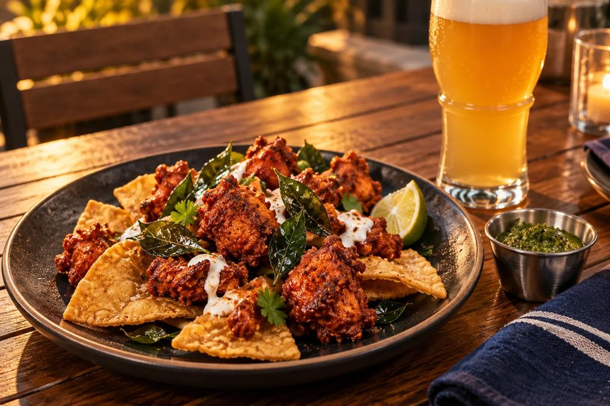

Chicken 65 Totopos
IN DEVELOPMENT Proposed presentation · not cooked or tested
Bite-sized fried boneless chicken thigh in the style of South Indian Chicken 65, served on and with thick fried corn chips. It is a design in development and has not been cooked.
The chip becomes the plate, so chicken and chip are built to be eaten together. It is a shareable, hands-on opener that shows the Indo-Mex idea immediately.
The full design
- Indian side
- Chicken 65 with a yogurt, ginger, garlic and lemon marinade, curry leaf and green chile. It is associated with Chennai, but its origin is contested.
- Mexican side
- Fried nixtamal corn totopos as the base, with lime, onion and crema. The thick chip is NASHA's own design choice, not a Mexican standard.
- How they join
- The chicken and chip are eaten as one bite, with crema as an optional cooler in place of raita. Three constructions (integrated, ring, composed board) are planned for comparison.
- Texture target
- Crisp-shell juicy chicken; chip still crisp at ten minutes in
- Cannot change without losing the dish
- Boneless chicken thigh, rice flour and cornflour coating, curry leaf, green chile, fried corn tortilla wedges, lime.
- Beer idea
- Mexican-Style Lager (alternate: Pilsner)
- Zero-proof idea
- An agua-fresca-style drink of fruit, lime and a little salt: bright, acidic and lightly savory, served very cold.
- Biggest kitchen risk
- HIGH: moisture migration into chip; 10-minute failure test
- Cultural care
- Medium. The Chicken 65 origin and the Hyderabad or Andhra lineage are unconfirmed, so no single origin story should be told, and an advisor should review.
- First test
- A first home-kitchen test with the rules written beforehand: three ways of building the plate, scored blind at the start, after five minutes and after ten.